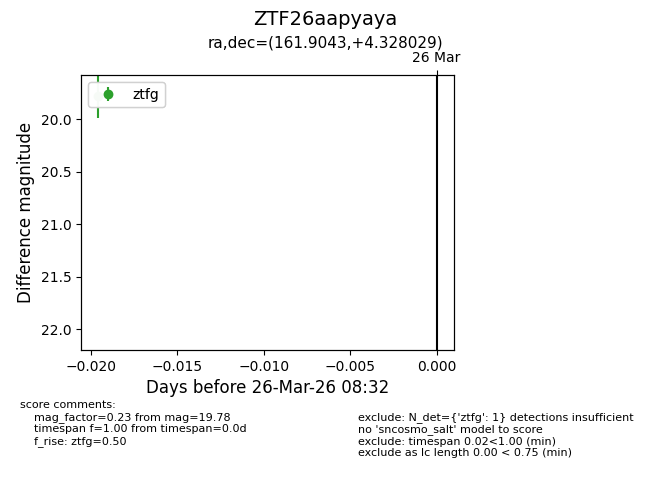
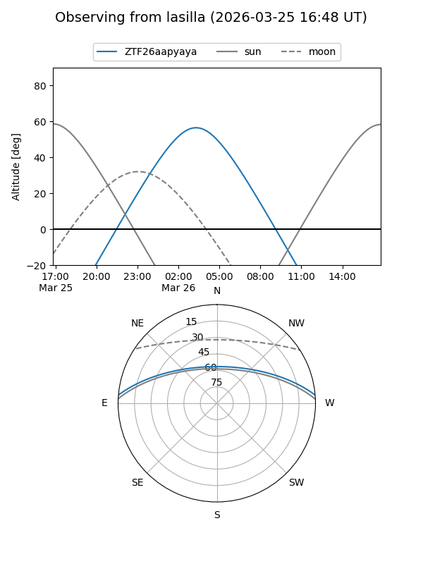
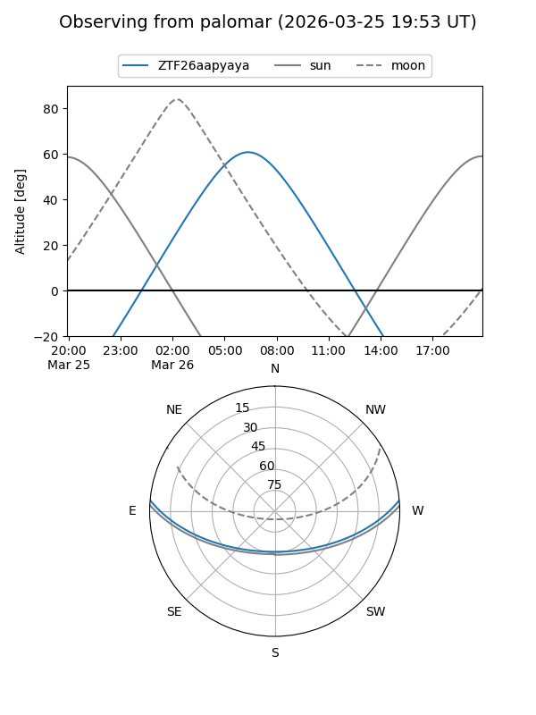

ZTF26aapyaya
Target ZTF26aapyaya at 2026-03-26 08:34
Aliases and brokers:
FINK: link
Lasair: link
ALeRCE: link
alt names
ZTF26aapyaya (ztf,fink_ztf)
Coordinates:
equatorial (ra, dec) = 161.9043,+4.32803
equatorial (HMS+DMS) = 10:47:37.04,+04:19:40.90
galactic (l, b) = (245.1134,+52.69896)
Flags:
Photometry:
last ztfg=19.78
1 ztfg detections
Lightcurve

Visibility


Additional plots